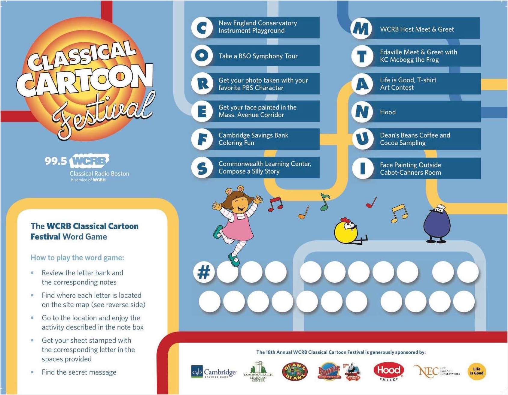
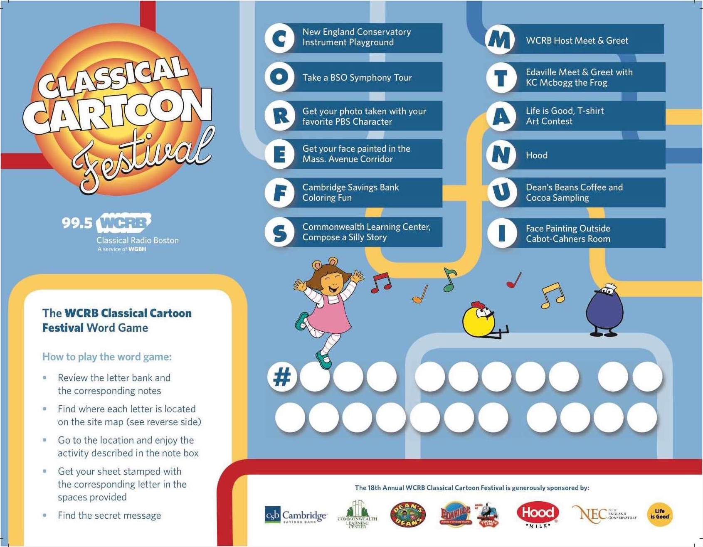

Pamphlet with Program and Map

Activity and Word Game
Sample Poster Signage

Sample Digital Signage

Each year, WCRB hosts a Classical Cartoon Festival to expose local children with the joys of classical music. The sole designer on this comprehensive 2017 redesign, I communicated regularly with the client to produce the following signage, pamphlet, activity sheets, and more.
Ultimately, I relied on my intimate understanding of performing arts and internal resources to create a set of materials both whimsical and servicable—approporiate to both the participating children and their accompanying adult.
Pamphlet with Program and Map
Activity and Word Game
Sample Poster Signage
Sample Digital Signage